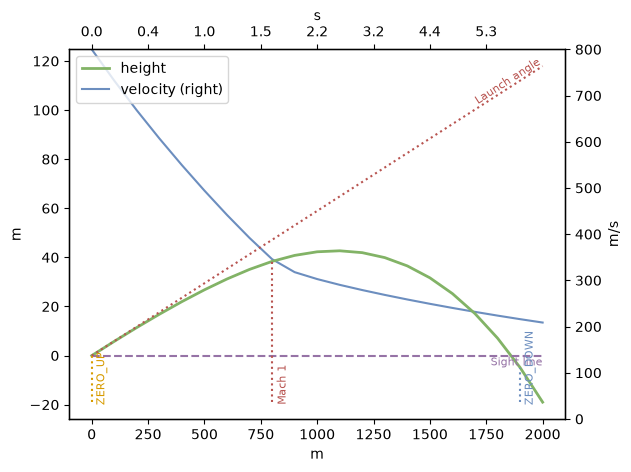
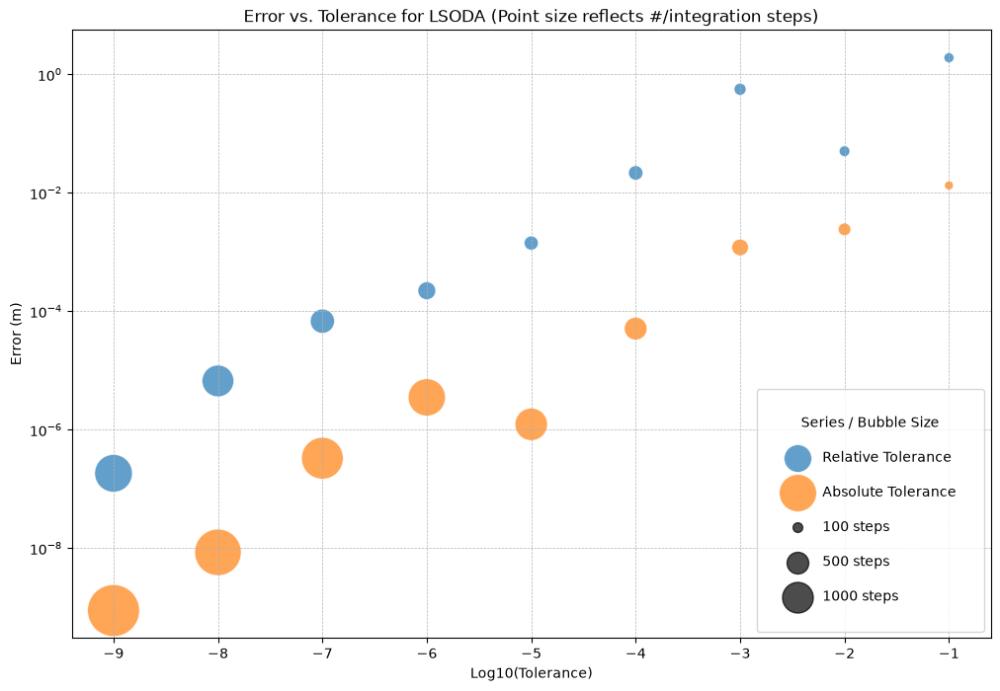
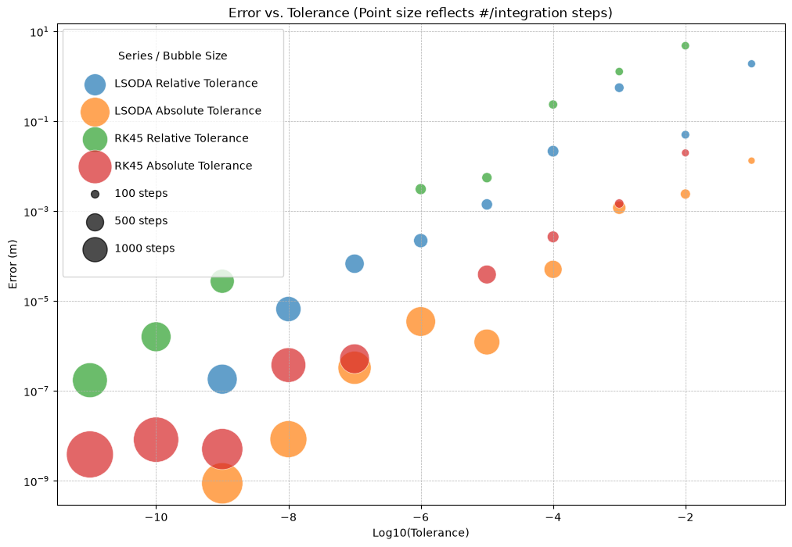
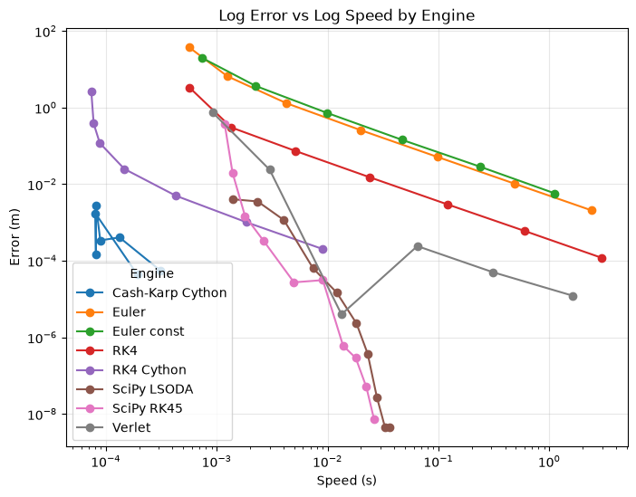

Load¶
import io
import logging
import math
import sys
import pandas as pd
from typing import Tuple, get_args
from py_ballisticcalc import Ammo, Atmo, Weapon, Shot, Calculator, HitResult
from py_ballisticcalc import RangeError, TrajFlag, BaseEngineConfigDict, SciPyEngineConfigDict
from py_ballisticcalc import TableG7, logger, loadMetricUnits
from py_ballisticcalc.drag_model import DragModel
from py_ballisticcalc.unit import *
from py_ballisticcalc.interface import _EngineLoader
logger.setLevel(logging.WARNING)
print("\nAvailable engines: " + str(sorted([e.name for e in _EngineLoader.iter_engines()])))
loadMetricUnits()
PreferredUnits.drop = Distance.Meter
PreferredUnits.distance = Distance.Meter
Available engines: ['cython.rkck', 'cython.euler', 'cython.rk4', 'cython.verlet', 'python.euler', 'python.rk4', 'scipy.rk45', 'python.verlet']
Reference Calculator¶
This reference calculator will determine the "correct" trajectory against which the error of all others will be measured.
ref_config = SciPyEngineConfigDict(
relative_tolerance=1e-12,
absolute_tolerance=1e-12,
integration_method="LSODA",
)
ref_calc = Calculator(config=ref_config, engine='scipy.lsoda')
Scenarios¶
2km flat-fire trajectory¶
A typical 7.62mm bullet launched at an elevation (60mils, about 3.375 degrees) sufficient to reach approximately 2km. We use the reference calculator to compute the trajectory.
dm = DragModel(0.22, TableG7, Weight.Gram(10), Distance.Centimeter(7.62), Distance.Centimeter(3.0))
ammo = Ammo(dm, Velocity.MPS(800))
weapon = Weapon(sight_height=Distance.Centimeter(4), twist=Distance.Centimeter(30), zero_elevation=Angular.Mil(60.0))
baseline_shot = Shot(weapon=weapon, ammo=ammo, atmo=Atmo.icao())
range = Distance.Meter(2000)
range_step = Distance.Meter(100)
reference_trajectory = ref_calc.fire(shot=baseline_shot, trajectory_range=range, trajectory_step=range_step, flags=TrajFlag.ALL)
reference_trajectory.plot()
ref = reference_trajectory.dataframe(True).drop(columns=['slant_height', 'drop_angle', 'windage', 'windage_angle', 'slant_distance', 'ogw'])
ref[ref.flag != "RANGE"]
| time | distance | velocity | mach | height | angle | density_ratio | drag | energy | flag | |
|---|---|---|---|---|---|---|---|---|---|---|
| 0 | 0.000 s | 0.0 m | 800 m/s | 2.35 mach | -0.0 m | 3.3750 ° | 1.00043e+00 | 2.634e-04 | 3200 J | ZERO_UP|RANGE |
| 8 | 1.524 s | 800.0 m | 346 m/s | 1.02 mach | 38.4 m | 1.6513 ° | 9.96747e-01 | 3.772e-04 | 598 J | MACH|RANGE |
| 11 | 2.488 s | 1100.0 m | 290 m/s | 0.85 mach | 42.7 m | -0.0927 ° | 9.96334e-01 | 1.245e-04 | 421 J | RANGE|APEX |
| 19 | 5.713 s | 1900.0 m | 216 m/s | 0.63 mach | -4.9 m | -7.4145 ° | 1.00043e+00 | 1.134e-04 | 233 J | ZERO_DOWN|RANGE |

Define error¶
We will take the ZERO_DOWN (return-to-zero) row as our reference point for assessing the error in other engines.
reference_row = reference_trajectory.flag(TrajFlag.ZERO_DOWN)
reference_distance = reference_row.distance
reference_distance_meter = reference_distance >> Distance.Meter
def check_error(hit: HitResult, output: bool = False) -> float:
"""Error is vertical distance from zero at the reference distance."""
# Query the exact reference distance. `get_at()` uses the accepted-step
# interpolant when available, otherwise exact records rather than the
# scheduled presentation table (`trajectory`).
try:
chkpt = hit.get_at('distance', reference_distance)
except ArithmeticError:
return float('inf')
if chkpt is not None:
chk_x = chkpt.distance >> Distance.Meter
chk_h = chkpt.height >> Distance.Meter
chk_err = math.sqrt((chk_x-reference_distance_meter)**2 + chk_h**2)
if output:
print(f'At {chkpt.time}s: ({chk_x}, {chk_h})m ==> Error = {chk_err:.8f}m')
return chk_err
return float('inf')
summary = []
SciPy¶
def scipy_chk(timeit: bool = False, **kwargs):
config = SciPyEngineConfigDict(
**kwargs,
)
calc = Calculator(config=config, engine=SciPyIntegrationEngine)
hit = calc.fire(shot=baseline_shot, trajectory_range=range, trajectory_step=reference_distance, raise_range_error=False)
err = check_error(hit)
stats_engine = calc._engine_instance
stats_engine.integrate(baseline_shot, range, reference_distance)
evals = stats_engine.integration_step_count
if timeit:
speed = %timeit -o calc.fire(shot=baseline_shot, trajectory_range=range, trajectory_step=reference_distance, raise_range_error=False)
return err, evals, speed.average
return err, evals
logger.setLevel(logging.WARNING)
# Run with default tolerance:
err, count, speed = scipy_chk(timeit=True, integration_method="LSODA")
print(f'Error={err:.8f}m. Integration steps: {count}. Speed: {speed:.5f}s')
11.1 ms ± 114 μs per loop (mean ± std. dev. of 7 runs, 100 loops each)
Error=0.00000301m. Integration steps: 917. Speed: 0.01108s
Integration Methods¶
Here's a quick look at each of the integration methods listed in the SciPyIntegrationEngine, using its default error tolerance settings.
from py_ballisticcalc.engines.scipy.rk45 import INTEGRATION_METHOD
method_summary = []
for method in get_args(INTEGRATION_METHOD):
err, count, speed = scipy_chk(timeit=True, integration_method=method)
method_summary.append(('SciPy', method, err, count, speed))
pd.DataFrame(method_summary, columns=['Engine', 'Setting', 'Error (m)', 'Integration Steps', 'Speed (s)']).set_index('Setting').sort_values(by='Error (m)', ascending=True)
17 ms ± 570 μs per loop (mean ± std. dev. of 7 runs, 100 loops each)
5.02 ms ± 247 μs per loop (mean ± std. dev. of 7 runs, 100 loops each)
12.3 ms ± 207 μs per loop (mean ± std. dev. of 7 runs, 100 loops each)
40.4 ms ± 376 μs per loop (mean ± std. dev. of 7 runs, 10 loops each)
41 ms ± 1.29 ms per loop (mean ± std. dev. of 7 runs, 10 loops each)
11.8 ms ± 614 μs per loop (mean ± std. dev. of 7 runs, 100 loops each)
| Engine | Error (m) | Integration Steps | Speed (s) | |
|---|---|---|---|---|
| Setting | ||||
| LSODA | SciPy | 0.000003 | 917 | 0.011757 |
| Radau | SciPy | 0.000005 | 1627 | 0.040380 |
| RK23 | SciPy | 0.000022 | 1226 | 0.016952 |
| BDF | SciPy | 0.000022 | 1013 | 0.040996 |
| DOP853 | SciPy | 0.000085 | 1397 | 0.012261 |
| RK45 | SciPy | 0.000352 | 458 | 0.005021 |
Tolerance¶
SciPy allows us to specify both "absolute" and "relative" error tolerance. The meaning of the two terms and their interaction isn't always intuitive, so let's see what happens as we vary each while holding out the other term. We'll do this for both the LSODA and RK45 methods.
LSODA¶
tol_tests = []
method = 'LSODA'
# Run with rtol as limiting factor
rtol = 1.
atol = 1e-13
while rtol > 1e-8:
rtol /= 10.0
err, count = scipy_chk(integration_method=method, relative_tolerance=rtol, absolute_tolerance=atol)
tol_tests.append((method, atol, rtol, err, count))
# Run with atol as limiting factor
atol = 1.
rtol = 1e-13
while atol > 1e-8:
atol /= 10.0
err, count = scipy_chk(integration_method=method, relative_tolerance=rtol, absolute_tolerance=atol)
tol_tests.append((method, atol, rtol, err, count))
display(
pd.DataFrame(tol_tests, columns=['Method', 'Absolute Tolerance', 'Relative Tolerance', 'Error (m)', 'Integration Steps'])
.sort_values(by='Error (m)', ascending=False)
.style.format({'Absolute Tolerance': '{:.0e}', 'Relative Tolerance': '{:.0e}', 'Error (m)': '{:.11f}'}))
| Method | Absolute Tolerance | Relative Tolerance | Error (m) | Integration Steps | |
|---|---|---|---|---|---|
| 0 | LSODA | 1e-13 | 1e-01 | 1.90600084705 | 102 |
| 2 | LSODA | 1e-13 | 1e-03 | 0.56000312520 | 149 |
| 1 | LSODA | 1e-13 | 1e-02 | 0.05036840988 | 117 |
| 3 | LSODA | 1e-13 | 1e-04 | 0.02164497295 | 218 |
| 9 | LSODA | 1e-01 | 1e-13 | 0.01331754678 | 82 |
| 10 | LSODA | 1e-02 | 1e-13 | 0.00241211642 | 165 |
| 4 | LSODA | 1e-13 | 1e-05 | 0.00141573223 | 207 |
| 11 | LSODA | 1e-03 | 1e-13 | 0.00119584405 | 289 |
| 5 | LSODA | 1e-13 | 1e-06 | 0.00022170359 | 333 |
| 6 | LSODA | 1e-13 | 1e-07 | 0.00006796582 | 612 |
| 12 | LSODA | 1e-04 | 1e-13 | 0.00005085833 | 539 |
| 7 | LSODA | 1e-13 | 1e-08 | 0.00000665238 | 1057 |
| 14 | LSODA | 1e-06 | 1e-13 | 0.00000351151 | 1460 |
| 13 | LSODA | 1e-05 | 1e-13 | 0.00000123119 | 1108 |
| 15 | LSODA | 1e-07 | 1e-13 | 0.00000032946 | 1839 |
| 8 | LSODA | 1e-13 | 1e-09 | 0.00000018333 | 1493 |
| 16 | LSODA | 1e-08 | 1e-13 | 0.00000000849 | 2281 |
| 17 | LSODA | 1e-09 | 1e-13 | 0.00000000088 | 2848 |
import matplotlib.pyplot as plt
import numpy as np
df_tol = pd.DataFrame(tol_tests, columns=['Method', 'Absolute Tolerance', 'Relative Tolerance', 'Error (m)', 'Integration Steps'])
# Separate the two series of data
atol_fixed = df_tol[df_tol['Absolute Tolerance'] == 1e-13].copy()
rtol_fixed = df_tol[df_tol['Relative Tolerance'] == 1e-13].copy()
fig, ax = plt.subplots(figsize=(12, 8))
# Plot the series where Absolute Tolerance is fixed
ax.scatter(
np.log10(atol_fixed['Relative Tolerance']),
atol_fixed['Error (m)'],
s=atol_fixed['Integration Steps'] * 0.5, # Scale size for better visibility
label='Relative Tolerance',
alpha=0.7,
edgecolors='w',
linewidth=0.5
)
# Plot the series where Relative Tolerance is fixed
ax.scatter(
np.log10(rtol_fixed['Absolute Tolerance']),
rtol_fixed['Error (m)'],
s=rtol_fixed['Integration Steps'] * 0.5, # Scale size for better visibility
label='Absolute Tolerance',
alpha=0.7,
edgecolors='w',
linewidth=0.5
)
ax.set_xlabel('Log10(Tolerance)')
ax.set_ylabel('Error (m)')
ax.set_title('Error vs. Tolerance for LSODA (Point size reflects #/integration steps)')
ax.legend()
ax.grid(True, which='both', linestyle='--', linewidth=0.5)
ax.set_yscale('log') # Use a log scale for error to see the full range
# Add a legend for bubble sizes
for steps in [100, 500, 1000]:
ax.scatter([], [], s=steps * 0.5, c='k', alpha=0.7, label=f'{steps} steps')
ax.legend(title='Series / Bubble Size', scatterpoints=1, labelspacing=1.5, borderpad=2, loc='lower right')
#plt.savefig('ErrorTolerance.svg', bbox_inches='tight')
plt.show()

RK45¶
method = 'RK45'
# Run with rtol as limiting factor
rtol = 1e-1
atol = 1e-13
while rtol > 1e-10:
rtol /= 10.0
try:
err, count = scipy_chk(integration_method=method, relative_tolerance=rtol, absolute_tolerance=atol)
tol_tests.append((method, atol, rtol, err, count))
except ArithmeticError as e:
print(f"Failed to reach distance with {rtol=}")
continue
# Run with atol as limiting factor
atol = 1e-1
rtol = 1e-13
while atol > 1e-10:
atol /= 10.0
try:
err, count = scipy_chk(integration_method=method, relative_tolerance=rtol, absolute_tolerance=atol)
tol_tests.append((method, atol, rtol, err, count))
except ArithmeticError as e:
print(f"Failed to reach distance with {atol=}")
continue
df_tol = pd.DataFrame(tol_tests, columns=['Method', 'Absolute Tolerance', 'Relative Tolerance', 'Error (m)', 'Integration Steps']).sort_values(by='Error (m)', ascending=False)
display(df_tol[df_tol['Method'] == 'RK45'].sort_values(by='Error (m)', ascending=False)
.style.format({'Absolute Tolerance': '{:.0e}', 'Relative Tolerance': '{:.0e}', 'Error (m)': '{:.11f}'}))
| Method | Absolute Tolerance | Relative Tolerance | Error (m) | Integration Steps | |
|---|---|---|---|---|---|
| 18 | RK45 | 1e-13 | 1e-02 | 4.80785741502 | 110 |
| 19 | RK45 | 1e-13 | 1e-03 | 1.27925616677 | 110 |
| 20 | RK45 | 1e-13 | 1e-04 | 0.23688121562 | 134 |
| 28 | RK45 | 1e-02 | 1e-13 | 0.01987211151 | 98 |
| 21 | RK45 | 1e-13 | 1e-05 | 0.00558365130 | 170 |
| 22 | RK45 | 1e-13 | 1e-06 | 0.00309949836 | 200 |
| 29 | RK45 | 1e-03 | 1e-13 | 0.00148058349 | 140 |
| 30 | RK45 | 1e-04 | 1e-13 | 0.00026892650 | 224 |
| 24 | RK45 | 1e-13 | 1e-08 | 0.00026740152 | 464 |
| 23 | RK45 | 1e-13 | 1e-07 | 0.00026298424 | 302 |
| 31 | RK45 | 1e-05 | 1e-13 | 0.00003909501 | 584 |
| 25 | RK45 | 1e-13 | 1e-09 | 0.00002767164 | 962 |
| 32 | RK45 | 1e-06 | 1e-13 | 0.00000383078 | 944 |
| 26 | RK45 | 1e-13 | 1e-10 | 0.00000161046 | 1490 |
| 33 | RK45 | 1e-07 | 1e-13 | 0.00000052081 | 1478 |
| 34 | RK45 | 1e-08 | 1e-13 | 0.00000037750 | 2018 |
| 27 | RK45 | 1e-13 | 1e-11 | 0.00000017391 | 2036 |
| 36 | RK45 | 1e-10 | 1e-13 | 0.00000000827 | 3434 |
| 35 | RK45 | 1e-09 | 1e-13 | 0.00000000509 | 2840 |
| 37 | RK45 | 1e-11 | 1e-13 | 0.00000000388 | 3704 |
Chart¶
import matplotlib.pyplot as plt
import numpy as np
fig, ax = plt.subplots(figsize=(12, 8))
for method in ['LSODA', 'RK45']:
atol_fixed = df_tol[(df_tol.Method == method) & (df_tol['Absolute Tolerance'] == 1e-13)].copy()
rtol_fixed = df_tol[(df_tol.Method == method) & (df_tol['Relative Tolerance'] == 1e-13)].copy()
# Plot the series where Absolute Tolerance is fixed
ax.scatter(
np.log10(atol_fixed['Relative Tolerance']),
atol_fixed['Error (m)'],
s=atol_fixed['Integration Steps'] * 0.5, # Scale size for better visibility
label=method + ' Relative Tolerance',
alpha=0.7,
edgecolors='w',
linewidth=0.5
)
# Plot the series where Relative Tolerance is fixed
ax.scatter(
np.log10(rtol_fixed['Absolute Tolerance']),
rtol_fixed['Error (m)'],
s=rtol_fixed['Integration Steps'] * 0.5, # Scale size for better visibility
label=method + ' Absolute Tolerance',
alpha=0.7,
edgecolors='w',
linewidth=0.5
)
ax.set_xlabel('Log10(Tolerance)')
ax.set_ylabel('Error (m)')
ax.set_title('Error vs. Tolerance (Point size reflects #/integration steps)')
ax.legend()
ax.grid(True, which='both', linestyle='--', linewidth=0.5)
ax.set_yscale('log') # Use a log scale for error to see the full range
# Add a legend for bubble sizes
for steps in [100, 500, 1000]:
ax.scatter([], [], s=steps * 0.5, c='k', alpha=0.7, label=f'{steps} steps')
ax.legend(title='Series / Bubble Size', scatterpoints=1, labelspacing=1.5, borderpad=2)
plt.show()

Chosen Methods¶
For purposes of charting against the non-SciPy methods, we'll vary these two SciPy methods over a range of tolerance settings that give monotonically increasing error with speed.
method = 'RK45'
atol = 1e-10
while atol < 1.0:
err, count, speed = scipy_chk(timeit=True, integration_method=method, absolute_tolerance=atol, relative_tolerance=1e-12)
summary.append(('SciPy '+method, atol, err, count, speed))
atol *= 10.0
df = pd.DataFrame(summary, columns=['Engine', 'atol', 'Error (m)', 'Integration Steps', 'Speed (s)'])
display(df[df.Engine == 'SciPy '+method].style.format({'atol': '{:.0e}', 'Error (m)': '{:.10f}'}))
27.4 ms ± 612 μs per loop (mean ± std. dev. of 7 runs, 10 loops each)
22.6 ms ± 175 μs per loop (mean ± std. dev. of 7 runs, 10 loops each)
18.2 ms ± 334 μs per loop (mean ± std. dev. of 7 runs, 100 loops each)
13.6 ms ± 33.7 μs per loop (mean ± std. dev. of 7 runs, 100 loops each)
9.04 ms ± 96.1 μs per loop (mean ± std. dev. of 7 runs, 100 loops each)
5.13 ms ± 57 μs per loop (mean ± std. dev. of 7 runs, 100 loops each)
2.7 ms ± 14.9 μs per loop (mean ± std. dev. of 7 runs, 100 loops each)
1.84 ms ± 20.1 μs per loop (mean ± std. dev. of 7 runs, 1,000 loops each)
1.5 ms ± 38.9 μs per loop (mean ± std. dev. of 7 runs, 1,000 loops each)
1.1 ms ± 22.7 μs per loop (mean ± std. dev. of 7 runs, 1,000 loops each)
| Engine | atol | Error (m) | Integration Steps | Speed (s) | |
|---|---|---|---|---|---|
| 0 | SciPy RK45 | 1e-10 | 0.0000000073 | 2786 | 0.027407 |
| 1 | SciPy RK45 | 1e-09 | 0.0000000506 | 2348 | 0.022587 |
| 2 | SciPy RK45 | 1e-08 | 0.0000002889 | 1844 | 0.018157 |
| 3 | SciPy RK45 | 1e-07 | 0.0000006043 | 1412 | 0.013582 |
| 4 | SciPy RK45 | 1e-06 | 0.0000312028 | 932 | 0.009044 |
| 5 | SciPy RK45 | 1e-05 | 0.0000273116 | 500 | 0.005128 |
| 6 | SciPy RK45 | 1e-04 | 0.0003269344 | 230 | 0.002695 |
| 7 | SciPy RK45 | 1e-03 | 0.0014805741 | 140 | 0.001839 |
| 8 | SciPy RK45 | 1e-02 | 0.0198725849 | 98 | 0.001498 |
| 9 | SciPy RK45 | 1e-01 | 0.3694933259 | 62 | 0.001102 |
method = 'LSODA'
atol = 1e-10
while atol < 1.0:
err, count, speed = scipy_chk(timeit=True, integration_method=method, absolute_tolerance=atol, relative_tolerance=1e-12)
summary.append(('SciPy '+method, atol, err, count, speed))
atol *= 10.0
df = pd.DataFrame(summary, columns=['Engine', 'atol', 'Error (m)', 'Integration Steps', 'Speed (s)'])
display(df[df.Engine == 'SciPy '+method].style.format({'atol': '{:.0e}', 'Error (m)': '{:.10f}'}))
37.8 ms ± 828 μs per loop (mean ± std. dev. of 7 runs, 10 loops each)
34.3 ms ± 3.05 ms per loop (mean ± std. dev. of 7 runs, 10 loops each)
27.3 ms ± 469 μs per loop (mean ± std. dev. of 7 runs, 10 loops each)
22.6 ms ± 434 μs per loop (mean ± std. dev. of 7 runs, 10 loops each)
18.2 ms ± 442 μs per loop (mean ± std. dev. of 7 runs, 100 loops each)
11.8 ms ± 111 μs per loop (mean ± std. dev. of 7 runs, 100 loops each)
6.87 ms ± 68.3 μs per loop (mean ± std. dev. of 7 runs, 100 loops each)
3.89 ms ± 21.1 μs per loop (mean ± std. dev. of 7 runs, 100 loops each)
2.28 ms ± 43.1 μs per loop (mean ± std. dev. of 7 runs, 100 loops each)
1.4 ms ± 46.6 μs per loop (mean ± std. dev. of 7 runs, 1,000 loops each)
| Engine | atol | Error (m) | Integration Steps | Speed (s) | |
|---|---|---|---|---|---|
| 10 | SciPy LSODA | 1e-10 | 0.0000000045 | 2860 | 0.037802 |
| 11 | SciPy LSODA | 1e-09 | 0.0000000045 | 2633 | 0.034269 |
| 12 | SciPy LSODA | 1e-08 | 0.0000000275 | 2241 | 0.027256 |
| 13 | SciPy LSODA | 1e-07 | 0.0000003746 | 1829 | 0.022597 |
| 14 | SciPy LSODA | 1e-06 | 0.0000023065 | 1534 | 0.018242 |
| 15 | SciPy LSODA | 1e-05 | 0.0000147336 | 1013 | 0.011801 |
| 16 | SciPy LSODA | 1e-04 | 0.0000636292 | 563 | 0.006874 |
| 17 | SciPy LSODA | 1e-03 | 0.0011555979 | 301 | 0.003892 |
| 18 | SciPy LSODA | 1e-02 | 0.0035434989 | 161 | 0.002283 |
| 19 | SciPy LSODA | 1e-01 | 0.0040488917 | 82 | 0.001396 |
Other engines¶
def chk_engine(engine_name: str, timeit: bool = False, step_multiplier: float = 1.0):
config = BaseEngineConfigDict(
cStepMultiplier=step_multiplier,
)
calc = Calculator(config=config, engine=engine_name)
hit = calc.fire(shot=baseline_shot, trajectory_range=range, trajectory_step=reference_distance, raise_range_error=False)
err = check_error(hit, False)
stats_engine = calc._engine_instance
stats_engine.integrate(baseline_shot, range, reference_distance)
evals = stats_engine.integration_step_count
if timeit:
speed = %timeit -o calc.fire(shot=baseline_shot, trajectory_range=range, trajectory_step=reference_distance, raise_range_error=False)
return err, evals, speed.average
return err, evals
RK4¶
The Runge-Kutta 4th-order solver essentially evaluates 4 points per integration step. To facilitate comparison with the other engines we'll set its base time step to 1ms.
from py_ballisticcalc.engines import RK4IntegrationEngine
rk_time_step = RK4IntegrationEngine.DEFAULT_TIME_STEP = 0.001
step = 5.0
multiplier = 1.0/step**2
while multiplier <= 1000.0:
err, count, speed = chk_engine('python.rk4', timeit=True, step_multiplier=multiplier)
summary.append(('RK4', multiplier*rk_time_step, err, count, speed))
multiplier *= step
df = pd.DataFrame(summary, columns=['Engine', 'Step (s)', 'Error (m)', 'Integration Steps', 'Speed (s)'])
df[df.Engine == 'RK4']
3.02 s ± 18.3 ms per loop (mean ± std. dev. of 7 runs, 1 loop each)
610 ms ± 2.93 ms per loop (mean ± std. dev. of 7 runs, 1 loop each)
124 ms ± 2.01 ms per loop (mean ± std. dev. of 7 runs, 10 loops each)
25.3 ms ± 547 μs per loop (mean ± std. dev. of 7 runs, 10 loops each)
5.25 ms ± 165 μs per loop (mean ± std. dev. of 7 runs, 100 loops each)
1.37 ms ± 10.4 μs per loop (mean ± std. dev. of 7 runs, 1,000 loops each)
573 μs ± 2.6 μs per loop (mean ± std. dev. of 7 runs, 1,000 loops each)
| Engine | Step (s) | Error (m) | Integration Steps | Speed (s) | |
|---|---|---|---|---|---|
| 20 | RK4 | 0.00004 | 0.000119 | 154729 | 3.015828 |
| 21 | RK4 | 0.00020 | 0.000602 | 30946 | 0.609673 |
| 22 | RK4 | 0.00100 | 0.002981 | 6190 | 0.123576 |
| 23 | RK4 | 0.00500 | 0.015094 | 1238 | 0.025279 |
| 24 | RK4 | 0.02500 | 0.073270 | 248 | 0.005253 |
| 25 | RK4 | 0.12500 | 0.303006 | 50 | 0.001370 |
| 26 | RK4 | 0.62500 | 3.319578 | 10 | 0.000573 |
Verlet¶
Our velocity Verlet solver has a base time step of 1ms:
from py_ballisticcalc.engines import VelocityVerletIntegrationEngine
verlet_time_step = VelocityVerletIntegrationEngine.DEFAULT_TIME_STEP
step = 5.0
multiplier = 1.0/step**2
while multiplier <= 500.0:
err, count, speed = chk_engine('python.verlet', timeit=True, step_multiplier=multiplier)
summary.append(('Verlet', multiplier*verlet_time_step, err, count, speed))
multiplier *= step
df = pd.DataFrame(summary, columns=['Engine', 'Step (s)', 'Error (m)', 'Integration Steps', 'Speed (s)'])
df[df.Engine == 'Verlet']
1.57 s ± 16.1 ms per loop (mean ± std. dev. of 7 runs, 1 loop each)
311 ms ± 1.08 ms per loop (mean ± std. dev. of 7 runs, 1 loop each)
63.8 ms ± 770 μs per loop (mean ± std. dev. of 7 runs, 10 loops each)
13.6 ms ± 259 μs per loop (mean ± std. dev. of 7 runs, 100 loops each)
3 ms ± 53.7 μs per loop (mean ± std. dev. of 7 runs, 100 loops each)
941 μs ± 34.1 μs per loop (mean ± std. dev. of 7 runs, 1,000 loops each)
| Engine | Step (s) | Error (m) | Integration Steps | Speed (s) | |
|---|---|---|---|---|---|
| 27 | Verlet | 0.00004 | 0.000012 | 154729 | 1.574731 |
| 28 | Verlet | 0.00020 | 0.000050 | 30946 | 0.310670 |
| 29 | Verlet | 0.00100 | 0.000241 | 6190 | 0.063818 |
| 30 | Verlet | 0.00500 | 0.000004 | 1238 | 0.013595 |
| 31 | Verlet | 0.02500 | 0.023883 | 248 | 0.002999 |
| 32 | Verlet | 0.12500 | 0.735923 | 50 | 0.000941 |
Euler¶
Our Euler integrator uses a base "step" of 0.5ft, which it then converts to a time step by dividing by max(1.0, velocity) (where velocity is in fps). This makes the algorithm to take smaller steps when things are changing more quickly, which should produce lower error for the same total number of steps than it would if step size were held constant.
step = 5.0
multiplier = 1.0/step**2
while multiplier <= 1000.0:
err, count, speed = chk_engine('python.euler', timeit=True, step_multiplier=multiplier)
summary.append(('Euler', multiplier, err, count, speed))
multiplier *= step
df = pd.DataFrame(summary, columns=['Engine', 'Multiplier', 'Error (m)', 'Integration Steps', 'Speed (s)'])
df[df.Engine == 'Euler']
2.5 s ± 62.1 ms per loop (mean ± std. dev. of 7 runs, 1 loop each)
503 ms ± 17.1 ms per loop (mean ± std. dev. of 7 runs, 1 loop each)
99.5 ms ± 2.18 ms per loop (mean ± std. dev. of 7 runs, 10 loops each)
20 ms ± 161 μs per loop (mean ± std. dev. of 7 runs, 10 loops each)
4.66 ms ± 302 μs per loop (mean ± std. dev. of 7 runs, 100 loops each)
1.25 ms ± 60.8 μs per loop (mean ± std. dev. of 7 runs, 1,000 loops each)
585 μs ± 17 μs per loop (mean ± std. dev. of 7 runs, 1,000 loops each)
| Engine | Multiplier | Error (m) | Integration Steps | Speed (s) | |
|---|---|---|---|---|---|
| 33 | Euler | 0.04 | 0.002060 | 328732 | 2.501272 |
| 34 | Euler | 0.20 | 0.010299 | 65748 | 0.502751 |
| 35 | Euler | 1.00 | 0.051508 | 13151 | 0.099452 |
| 36 | Euler | 5.00 | 0.257775 | 2632 | 0.020027 |
| 37 | Euler | 25.00 | 1.295271 | 528 | 0.004657 |
| 38 | Euler | 125.00 | 6.627878 | 107 | 0.001249 |
| 39 | Euler | 625.00 | 38.002109 | 23 | 0.000585 |
Euler constant step¶
Here we monkey-patch the EulerIntegrationEngine to use a constant time step to see if that has any effect on performance. (It does not.)
from py_ballisticcalc.engines.euler import EulerIntegrationEngine
def time_step(self, base_step: float, velocity: float) -> float:
return base_step / 500.0 # Set a constant time step of 1ms for Euler engine
EulerIntegrationEngine.time_step = time_step
step = 5.0
multiplier = 1.0/step**2
while multiplier <= 500.0:
err, count, speed = chk_engine('python.euler', step_multiplier=multiplier, timeit=True)
summary.append(('Euler const', multiplier*0.001, err, count, speed))
multiplier *= step
df = pd.DataFrame(summary, columns=['Engine', 'Step (s)', 'Error (m)', 'Integration Steps', 'Speed (s)'])
df[df.Engine == 'Euler const']
1.15 s ± 17 ms per loop (mean ± std. dev. of 7 runs, 1 loop each)
231 ms ± 1.56 ms per loop (mean ± std. dev. of 7 runs, 1 loop each)
46.8 ms ± 184 μs per loop (mean ± std. dev. of 7 runs, 10 loops each)
9.9 ms ± 229 μs per loop (mean ± std. dev. of 7 runs, 100 loops each)
2.32 ms ± 64.2 μs per loop (mean ± std. dev. of 7 runs, 100 loops each)
776 μs ± 5.8 μs per loop (mean ± std. dev. of 7 runs, 1,000 loops each)
| Engine | Step (s) | Error (m) | Integration Steps | Speed (s) | |
|---|---|---|---|---|---|
| 40 | Euler const | 0.00004 | 0.005765 | 154732 | 1.152659 |
| 41 | Euler const | 0.00020 | 0.028818 | 30949 | 0.230610 |
| 42 | Euler const | 0.00100 | 0.144194 | 6193 | 0.046799 |
| 43 | Euler const | 0.00500 | 0.722641 | 1241 | 0.009897 |
| 44 | Euler const | 0.02500 | 3.662860 | 251 | 0.002321 |
| 45 | Euler const | 0.12500 | 19.717513 | 53 | 0.000776 |
RK4 Compiled¶
step = 5.0
multiplier = 1.0/step**2
while multiplier <= 1000.0:
# To get same step as other engines without recompiling, check the base step size in python.rk4.pyx
err, count, speed = chk_engine('cython.rk4', timeit=True, step_multiplier=multiplier*(2.0/3.0))
summary.append(('RK4 Cython', multiplier, err, count, speed))
multiplier *= step
df = pd.DataFrame(summary, columns=['Engine', 'Multiplier', 'Error (m)', 'Integration Steps', 'Speed (s)'])
df[df.Engine == 'RK4 Cython']
9.07 ms ± 133 μs per loop (mean ± std. dev. of 7 runs, 100 loops each)
1.89 ms ± 40 μs per loop (mean ± std. dev. of 7 runs, 1,000 loops each)
437 μs ± 7.98 μs per loop (mean ± std. dev. of 7 runs, 1,000 loops each)
148 μs ± 513 ns per loop (mean ± std. dev. of 7 runs, 10,000 loops each)
95.4 μs ± 2.46 μs per loop (mean ± std. dev. of 7 runs, 10,000 loops each)
83.5 μs ± 2.54 μs per loop (mean ± std. dev. of 7 runs, 10,000 loops each)
82.3 μs ± 1.56 μs per loop (mean ± std. dev. of 7 runs, 10,000 loops each)
| Engine | Multiplier | Error (m) | Integration Steps | Speed (s) | |
|---|---|---|---|---|---|
| 46 | RK4 Cython | 0.04 | 0.000202 | 92838 | 0.009075 |
| 47 | RK4 Cython | 0.20 | 0.001014 | 18568 | 0.001889 |
| 48 | RK4 Cython | 1.00 | 0.005006 | 3714 | 0.000437 |
| 49 | RK4 Cython | 5.00 | 0.024963 | 743 | 0.000148 |
| 50 | RK4 Cython | 25.00 | 0.118445 | 149 | 0.000095 |
| 51 | RK4 Cython | 125.00 | 0.384353 | 30 | 0.000083 |
| 52 | RK4 Cython | 625.00 | 2.607684 | 6 | 0.000082 |
Cash-Karp Compiled¶
Cash-Karp is an adaptive compiled RK45 engine. cStepMultiplier supplies its base step; the engine adapts around it using its default relative tolerance.
step = 5.0
multiplier = 1.0 / step**2
while multiplier <= 1000.0:
err, count, speed = chk_engine('cython.rkck', timeit=True, step_multiplier=multiplier)
summary.append(('Cash-Karp Cython', multiplier, err, count, speed))
multiplier *= step
df = pd.DataFrame(summary, columns=['Engine', 'Multiplier', 'Error (m)', 'Integration Steps', 'Speed (s)'])
df[df.Engine == 'Cash-Karp Cython']
335 μs ± 6.06 μs per loop (mean ± std. dev. of 7 runs, 1,000 loops each)
129 μs ± 3.35 μs per loop (mean ± std. dev. of 7 runs, 10,000 loops each)
92.7 μs ± 4.81 μs per loop (mean ± std. dev. of 7 runs, 10,000 loops each)
83.2 μs ± 1.09 μs per loop (mean ± std. dev. of 7 runs, 10,000 loops each)
84.1 μs ± 1.56 μs per loop (mean ± std. dev. of 7 runs, 10,000 loops each)
82.4 μs ± 1.18 μs per loop (mean ± std. dev. of 7 runs, 10,000 loops each)
89.4 μs ± 2.03 μs per loop (mean ± std. dev. of 7 runs, 10,000 loops each)
| Engine | Multiplier | Error (m) | Integration Steps | Speed (s) | |
|---|---|---|---|---|---|
| 53 | Cash-Karp Cython | 0.04 | 0.000056 | 970 | 0.000335 |
| 54 | Cash-Karp Cython | 0.20 | 0.000407 | 196 | 0.000129 |
| 55 | Cash-Karp Cython | 1.00 | 0.000340 | 44 | 0.000093 |
| 56 | Cash-Karp Cython | 5.00 | 0.002822 | 22 | 0.000083 |
| 57 | Cash-Karp Cython | 25.00 | 0.000149 | 23 | 0.000084 |
| 58 | Cash-Karp Cython | 125.00 | 0.001733 | 19 | 0.000082 |
| 59 | Cash-Karp Cython | 625.00 | 0.000043 | 18 | 0.000089 |
Summary¶
The following chart shows that the highly adaptive SciPy solvers are in a class of their own: They produce the smallest errors, and can do so with an order of magnitude less compute. Certainly part of this is thanks to their compiled back-end. The compiled version of our RK4 solver is – despite a constant time step – even faster, and with the smallest multiplier setting its error is under 1 millimeter at almost 2km.
The poor showing by the velocity Verlet engine is striking but not unexpected: It is a second-order integrator, but one of its notable design advantages is conservation of energy. However, a ballistic trajectory with air resistance is a dissipative system: The drag force varies with velocity, and this breaks the time-reversibility that the Verlet formulas were designed to exploit. The result, as we see here, is that the Verlet's performance is reduced to that of the simpler, first-order Euler method.
Chart¶
from matplotlib import pyplot as plt
dfplot = pd.DataFrame(summary, columns=['Engine', 'Multiplier', 'Error (m)', 'Integration Steps', 'Speed'])
fig, ax = plt.subplots(figsize=(8, 6))
for engine, group in dfplot.groupby('Engine'):
ax.plot(group['Speed'], group['Error (m)'], marker='o', label=engine)
ax.set_xlabel('Speed (s)')
ax.set_ylabel('Error (m)')
ax.set_xscale('log')
ax.set_yscale('log')
ax.set_title('Log Error vs Log Speed by Engine')
ax.legend(title='Engine')
ax.grid(True, which='major', alpha=0.3)
plt.show()

Data¶
display(dfplot.style.format({'Multiplier': '{:.10f}', 'Error (m)': '{:.12f}'}))
| Engine | Multiplier | Error (m) | Integration Steps | Speed | |
|---|---|---|---|---|---|
| 0 | SciPy RK45 | 0.0000000001 | 0.000000007332 | 2786 | 0.027407 |
| 1 | SciPy RK45 | 0.0000000010 | 0.000000050593 | 2348 | 0.022587 |
| 2 | SciPy RK45 | 0.0000000100 | 0.000000288875 | 1844 | 0.018157 |
| 3 | SciPy RK45 | 0.0000001000 | 0.000000604253 | 1412 | 0.013582 |
| 4 | SciPy RK45 | 0.0000010000 | 0.000031202795 | 932 | 0.009044 |
| 5 | SciPy RK45 | 0.0000100000 | 0.000027311551 | 500 | 0.005128 |
| 6 | SciPy RK45 | 0.0001000000 | 0.000326934419 | 230 | 0.002695 |
| 7 | SciPy RK45 | 0.0010000000 | 0.001480574110 | 140 | 0.001839 |
| 8 | SciPy RK45 | 0.0100000000 | 0.019872584902 | 98 | 0.001498 |
| 9 | SciPy RK45 | 0.1000000000 | 0.369493325892 | 62 | 0.001102 |
| 10 | SciPy LSODA | 0.0000000001 | 0.000000004455 | 2860 | 0.037802 |
| 11 | SciPy LSODA | 0.0000000010 | 0.000000004482 | 2633 | 0.034269 |
| 12 | SciPy LSODA | 0.0000000100 | 0.000000027545 | 2241 | 0.027256 |
| 13 | SciPy LSODA | 0.0000001000 | 0.000000374560 | 1829 | 0.022597 |
| 14 | SciPy LSODA | 0.0000010000 | 0.000002306537 | 1534 | 0.018242 |
| 15 | SciPy LSODA | 0.0000100000 | 0.000014733562 | 1013 | 0.011801 |
| 16 | SciPy LSODA | 0.0001000000 | 0.000063629234 | 563 | 0.006874 |
| 17 | SciPy LSODA | 0.0010000000 | 0.001155597860 | 301 | 0.003892 |
| 18 | SciPy LSODA | 0.0100000000 | 0.003543498855 | 161 | 0.002283 |
| 19 | SciPy LSODA | 0.1000000000 | 0.004048891655 | 82 | 0.001396 |
| 20 | RK4 | 0.0000400000 | 0.000118551171 | 154729 | 3.015828 |
| 21 | RK4 | 0.0002000000 | 0.000602039536 | 30946 | 0.609673 |
| 22 | RK4 | 0.0010000000 | 0.002980614002 | 6190 | 0.123576 |
| 23 | RK4 | 0.0050000000 | 0.015093791222 | 1238 | 0.025279 |
| 24 | RK4 | 0.0250000000 | 0.073269834360 | 248 | 0.005253 |
| 25 | RK4 | 0.1250000000 | 0.303006366225 | 50 | 0.001370 |
| 26 | RK4 | 0.6250000000 | 3.319577823522 | 10 | 0.000573 |
| 27 | Verlet | 0.0000400000 | 0.000012269333 | 154729 | 1.574731 |
| 28 | Verlet | 0.0002000000 | 0.000050449060 | 30946 | 0.310670 |
| 29 | Verlet | 0.0010000000 | 0.000241336720 | 6190 | 0.063818 |
| 30 | Verlet | 0.0050000000 | 0.000003985103 | 1238 | 0.013595 |
| 31 | Verlet | 0.0250000000 | 0.023882865062 | 248 | 0.002999 |
| 32 | Verlet | 0.1250000000 | 0.735922948233 | 50 | 0.000941 |
| 33 | Euler | 0.0400000000 | 0.002059623450 | 328732 | 2.501272 |
| 34 | Euler | 0.2000000000 | 0.010299381457 | 65748 | 0.502751 |
| 35 | Euler | 1.0000000000 | 0.051507639619 | 13151 | 0.099452 |
| 36 | Euler | 5.0000000000 | 0.257775038851 | 2632 | 0.020027 |
| 37 | Euler | 25.0000000000 | 1.295271256964 | 528 | 0.004657 |
| 38 | Euler | 125.0000000000 | 6.627878300976 | 107 | 0.001249 |
| 39 | Euler | 625.0000000000 | 38.002108570496 | 23 | 0.000585 |
| 40 | Euler const | 0.0000400000 | 0.005764850606 | 154732 | 1.152659 |
| 41 | Euler const | 0.0002000000 | 0.028817953114 | 30949 | 0.230610 |
| 42 | Euler const | 0.0010000000 | 0.144193936297 | 6193 | 0.046799 |
| 43 | Euler const | 0.0050000000 | 0.722640576986 | 1241 | 0.009897 |
| 44 | Euler const | 0.0250000000 | 3.662860263820 | 251 | 0.002321 |
| 45 | Euler const | 0.1250000000 | 19.717513101530 | 53 | 0.000776 |
| 46 | RK4 Cython | 0.0400000000 | 0.000202119085 | 92838 | 0.009075 |
| 47 | RK4 Cython | 0.2000000000 | 0.001013902411 | 18568 | 0.001889 |
| 48 | RK4 Cython | 1.0000000000 | 0.005005850916 | 3714 | 0.000437 |
| 49 | RK4 Cython | 5.0000000000 | 0.024963369589 | 743 | 0.000148 |
| 50 | RK4 Cython | 25.0000000000 | 0.118445044799 | 149 | 0.000095 |
| 51 | RK4 Cython | 125.0000000000 | 0.384352784305 | 30 | 0.000083 |
| 52 | RK4 Cython | 625.0000000000 | 2.607683844753 | 6 | 0.000082 |
| 53 | Cash-Karp Cython | 0.0400000000 | 0.000055764009 | 970 | 0.000335 |
| 54 | Cash-Karp Cython | 0.2000000000 | 0.000407179848 | 196 | 0.000129 |
| 55 | Cash-Karp Cython | 1.0000000000 | 0.000340291867 | 44 | 0.000093 |
| 56 | Cash-Karp Cython | 5.0000000000 | 0.002821984118 | 22 | 0.000083 |
| 57 | Cash-Karp Cython | 25.0000000000 | 0.000148650625 | 23 | 0.000084 |
| 58 | Cash-Karp Cython | 125.0000000000 | 0.001732840263 | 19 | 0.000082 |
| 59 | Cash-Karp Cython | 625.0000000000 | 0.000043438630 | 18 | 0.000089 |